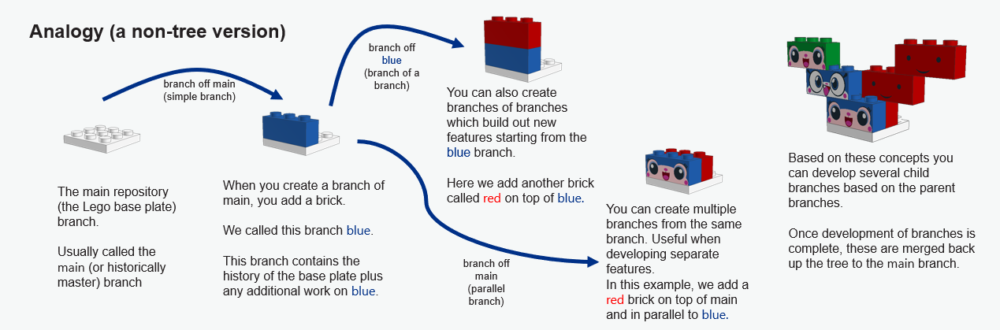
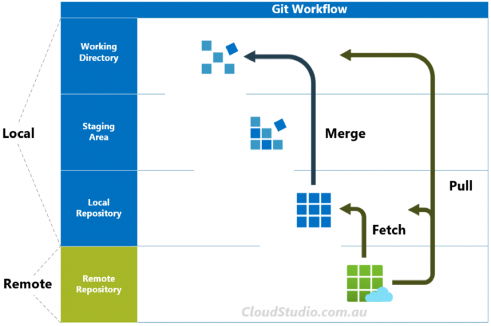
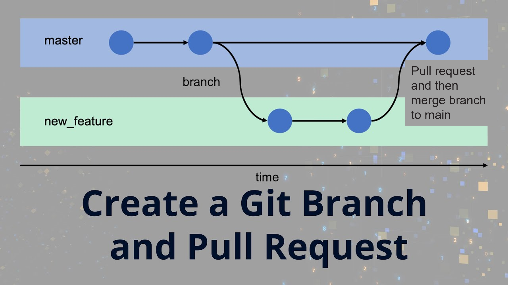

An Introduction to GitHub
What is Git? What is GitHub? and are they the same thing.?
Git is a version control system. It allows you to track different versions of your files and control source code.
GitHub is an online repository which hosts open source projects. It is not the same as Git
There are other alternatives to GitHub, for example GitLab or DevOps, which is part of Azure and is integrated in UDAL.
Key Concepts
What is a repository?
A repository is a place that contains all your code and files associated with a piece of work.
Generally, you would have a separate repository for each of your projects.
See here for a guide on how to create a repository in the SE D&A area.
Cloning
What is cloning?
Cloning a Git repository means creating a local copy of a remote repository on your computer.
Once you have cloned a repository, you can start working on the project, making and saving changes, and committing them to your local repository, without changing the remote version.
Why clone?
Contribute to group projects - where multiple people work on the same code base, cloning enables individuals to edit and save the code without impacting on other users.
Make use of other open source repositories - you can use and edit code from other people’s code, even if you don’t know them.
Branching
What is branching and why do we use it?
A branch is a separate version of the main repository. Branching allows you to work on a different part of a project without impacting the main repository. When any development or work is complete, a branch can be merged with the main repository.

You can read more about the lego analogy here (https://opensource.com/article/22/4/git-branches/).
Fetching

Given that one of the strengths of using Git and GitHub is that we can all work collaboratively, it is important to make sure that the version we are using is up to date with any changes that have been made to the repository. This is what fetching does.
Fetch lets us review what changes have been made in the remote repository before we add them to our local version.
The alternative option is called pulling. The difference here is that this automatically makes changes from the remote repository to the local version.
Fetch is the safer option as it lets us see what any changes are before we adopt them.

Staging, Committing, and Pushing
Once you have made a change to a script you can stage it, the next step is to commit it, and finally you can push it to the remote repository.
Before any of these steps, you should check that you haven’t included anything sensitive that shouldn’t be shared e.g. data.
Staging allows you to group any changes to different, but related, files so that they are in the same commit.
You may choose not to push your committed changes immediately e.g. if you are still in the process of making changes, but it allows you to separate your changes into stages and keep a record of those. Commits are the units of undo i.e. you can roll back the changes by commit, so it’s worth thinking about what you include in each commit (and don’t make them too large).
Pull requests
A pull request is how you make a request to merge your branch to another branch e.g. move your changes to the main branch. If there are things that disagree between the branches that you are trying to merge, this is called a conflict. You have to resolve these before you can merge. If there are no conflicts, your pull request can be actioned immediately and the branches will be merged.

The .gitignore
Sometimes our projects contain information or data that is sensitive and we do not want to publish or track this information. A .gitignore is a file that contains all of the files and folders from the project that you do not want Git to log and track.
You have some options for specifying files in the gitignore. Common ones are below:
- You can explicitly reference a file path within the project structure e.g.to ignore a file called data_load in a folder called helper:
helper/data_load.R
- You can ignore all files of a certain extension e.g. to ignore all .xlsx files:
*.xlsx
- You can add whole folders to the gitignore e.g. to ignore the folder called output:
output/
- You can exclude files from the gitignore e.g. you want to ignore all .pptx files except the one called final.pptx:
*.pptx !final.pptx
In GitHub desktop you can add files to the gitignore by right clicking on the file and clicking Ignore file. Or add all files of that type by right clicking and choosing e.g. Ignore all .xlsx files. In VSCode, ignored files are greyed out in the file explorer.
Your repository should always have a gitignore file in the root folder. When you initialise a repo you can choose to use a gitignore tailored to particular programming languages but the South East template repo has a gitignore that should be a good place to start.
If you are looking to create a .gitignore that covers a wide range of software, websites such as (https://www.toptal.com/developers/gitignore?) can be worth playing with